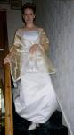
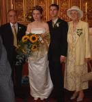
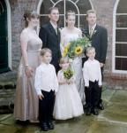
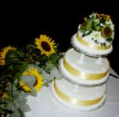
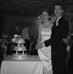
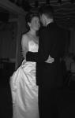

     
Well, that's it, we're married now!!!! And it was great. We both thoroughly enjoyed the whole day, we hope our guests did too. We did a lot of planning, and produced a Rough Guide to Jane and Richard's wedding which might be fun to re-read after the event.
Have a look at the Unofficial photos. If you have any photos of our wedding, please send them to us. Thanks!
And don't forget to look at the Official ones. Please respect the copyright of these photos.
Read our journal of how all the planning went, and what we thought of the build-up to the day
Take a look at the Pictures of the hen and stag day
Back to home